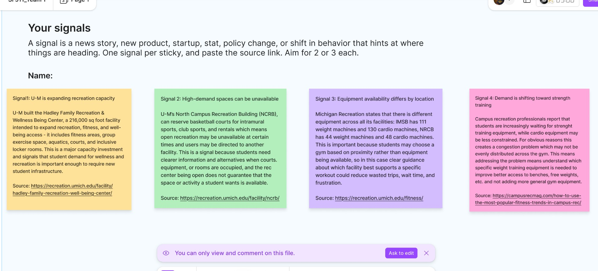
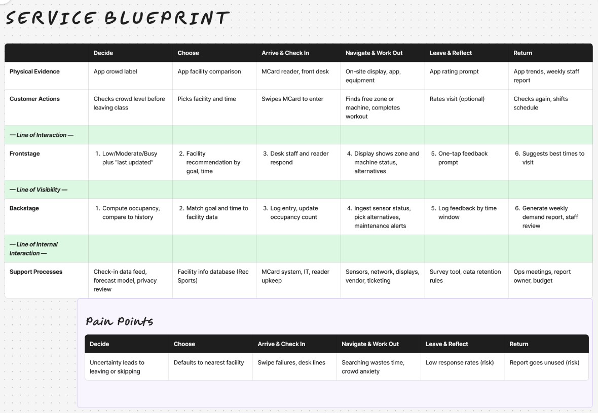

SI 511 / Product Discovery / Creation Crew / Fall 2026
Making campus workouts more predictable.
From gym-crowding interviews to a smart recreation concept: exploring how University of Michigan students could find available space, preserve workout time, and help Michigan Recreation make better operational decisions.
My role / What I contributed
Opportunity research · Product outcomes · Service blueprinting · Technical feasibility · Secondary research
Across our three group assignments, I contributed to the initial problem framing and desired outcomes in Google Docs; research signals on our Assignment #1 FigJam board; the Assignment #2 service blueprint and technical feasibility analysis; and the secondary-source investigation our team called “data mining” in Assignment #3. My role centered on connecting student needs to the proposed service journey and practical implementation constraints. The interviews, surveys, and interactive prototype were collaborative team outputs.
01 / Opportunity identification
The problem wasn't just a crowded gym.
Our team explored a recurring student frustration: gym visits can become unpredictable when students have limited workout windows, encounter crowded areas, or cannot find available equipment. Initial interviews also surfaced operational friction, such as card-reader and check-in issues.
We conducted four initial interviews involving student recreation users and staff. The research surfaced nuanced findings: some students avoid busy gyms, some reschedule visits, and others substitute exercises rather than wait.
Crowding changes behavior
Some students leave or adjust their visit time rather than wait through heavy demand.
Time is limited
Workout windows of roughly 30–60 minutes make avoidable searching and delays consequential.
Not all waiting is equal
Some students use alternative equipment, which suggested opportunities for flexible guidance.
How might Michigan Recreation reduce crowding-related friction for students while improving the use of existing facilities and resources?
My artifact / Assignment 01
Finding signals before selecting a solution
I contributed to the “Your Signals” area of our Assignment #1 FigJam board. These sourced observations included recreation capacity expansion, access constraints and equipment differences between facilities, and changing fitness demand. Together, they helped our team explore an opportunity beyond an isolated workout-planning feature.

Research limitations: four interviews cannot represent all Michigan Recreation users, and the team did not yet have validated facility-level check-in or equipment usage data.
02 / Product strategy
We broadened the idea beyond a workout planner.
Feedback on our first submission prompted us to distinguish Michigan Recreation as the institutional customer and buyer from students as the end users, strengthen competitor analysis, and explain operational value alongside student benefits. The subsequent strategy explored a connected smart-recreation experience rather than only a mobile workout-planning feature.
A. Mobile app enhancement
Communicate facility crowd levels, workout-planning options, and alternatives before arrival.
B. On-site displays
Help students decide where to go at entrances and other physical decision points.
C. Responsive web dashboard
Make facility-demand information accessible without depending on one app.
D. Advanced facility monitoring
Explore zone maps, occupancy sensors, and limited machine-level availability monitoring, subject to feasibility and privacy review.
Our proposed pilot centered on one facility, using basic occupancy information and busy-time patterns first, with more granular zone or equipment monitoring treated as a riskier later capability.
My artifact / Assignment 02
Mapping the service, not just the screen
I contributed to our service blueprint in FigJam. It traces six stages—Decide, Choose, Arrive & Check In, Navigate & Work Out, Leave & Reflect, and Return—and links customer actions to visible touchpoints, backstage activity, and support processes. This helped us consider what Michigan Recreation would need to operate the experience, not only what students would see.

My analysis / Assignment 02
Feasibility shaped the rollout
My feasibility contribution evaluated the technology and operational dependencies behind the experience. We treated facility-level crowd estimates as the most practical starting point, zone-level monitoring as moderately feasible, and machine-level availability as the riskiest capability requiring a limited pilot. This was a qualitative assessment, not a measured engineering benchmark.
Explore historical, de-identified MCard check-in data and simple Low / Moderate / Busy estimates.
Validate data access, sensor accuracy, accessibility, installation, and support needs.
Test a small set of high-demand equipment; show status unavailable if the data cannot be trusted.
This phased approach keeps infrastructure, privacy, recurring costs, and data quality visible as product decisions—not assumptions of a completed deployment.
| Desired outcome | How the team proposed evaluating it |
|---|---|
| Student workout efficiency | Time spent searching or waiting; workout completion |
| Facility utilization | Peak-period congestion and alternative space usage |
| Operational decisions | Staff usefulness ratings and decisions informed by demand data |
Desirability: evidence of crowding and scheduling difficulties suggested a meaningful problem. Viability: Michigan Recreation would need sufficient operational benefits to justify a paid solution. Feasibility: existing check-in data and facility-level estimates were more practical starting points than comprehensive machine-level monitoring.
03 / Assumption testing
A real pain point doesn't guarantee adoption.
We mapped assumptions across desirability, usability, viability, feasibility, and ethics, then prioritized four leap-of-faith questions: D1 equipment-search frustration, D2 pre-visit crowd checking, D4 willingness to modify workouts, and E2 understanding of occupancy-data practices. We collected student survey responses and reviewed secondary sources. The survey findings below come from 14 student respondents; they are exploratory, not representative of all Michigan Recreation users.
What the four tests told us
| Assumption | Observed evidence | Interpretation and response |
|---|---|---|
| D1 Equipment issues are common | 13/14 reported an equipment-related issue. | Supported in the report. Continue exploring machine availability as a direct student benefit. |
| D2 Students consult crowd information | 8/14 checked or considered crowding, but only 2/14 actually checked it. | Qualified / adoption unresolved. The report labels D2 supported, but the combined measure cannot establish an existing checking habit. Test actual use separately. |
| D4 Students modify workouts | 10/14 reported changing an exercise, area, or both. | Supported in the report. Explore useful equipment and exercise substitutions; this behavior does not by itself validate a specific recommendation feature. |
| E2 Students understand data use | 6/14 correctly identified collected data; 6/14 were unsure and 2/14 believed individual data would be collected. | Inconclusive in the report. Rewrite the privacy explanation and retest comprehension and data-use understanding. |
The unexpected insight
Students reported real equipment friction, but checking gym occupancy was uncommon. The report also found only 28.6% reporting high likelihood of using real-time crowd information, versus 64.3% reporting low likelihood. This weakened the assumption that visibility alone would drive product adoption.
The decision the evidence changed
Rather than positioning crowd monitoring as the primary value proposition, the team proposed prioritizing equipment-level availability and actionable workout alternatives, with crowd status as a supporting signal. We would test whether this narrower, more practical value proposition earns habitual use before investing in high-cost monitoring infrastructure.
Responsible use of facility data
Even though 78.6% of respondents indicated comfort or strong comfort with the proposed privacy approach, only 42.9% correctly understood the proposed data collection. We would explicitly explain what is collected, what is not collected, why it matters, and how the information is used—then retest comprehension.
Source: Creation Crew, Assumption Mapping, Testing, & Prototypes, pp. 7–9 (Fall 2026). The survey is exploratory; use the actual questionnaire, raw responses, and analysis in an appendix if sharing is permitted.
04 / Prototype and iteration
From crowd awareness to practical workout decisions.
Our team built a clickable Figma Make concept to explore three moments in a gym visit: understanding facility conditions, locating equipment, and adapting when a preferred workout option is unavailable. These screens use simulated information; they are not connected to live Michigan Recreation systems.
Our research shaped the emphasis: 13 of 14 respondents reported equipment-related problems, yet only 2 of 14 had actively checked gym crowd levels beforehand. We therefore prioritized actionable equipment information and alternatives, with facility crowding as supporting context.


01 / Check the environment
See simulated facility demand, with clear status labels and an opportunity to compare available spaces.
02 / Find usable equipment
Review proposed equipment-status information so students can decide where to go next.
03 / Adapt the workout
Consider an exercise alternative rather than losing time searching or abandoning a planned workout.
My product walkthrough
In this short walkthrough, I explain the student problem, the evidence behind our decisions, and the concept our team developed.
Prototype status: interactive concept using simulated data. A pilot with Michigan Recreation would be required to verify accuracy, adoption, and operational value.
05 / Outcomes and reflection
A better direction—still a hypothesis to validate.
What the team learned: Equipment friction was common among respondents, and workout changes were already part of their routines. But high problem frequency did not translate into high reported intent to use real-time crowd information. Privacy comfort also outpaced comprehension. Our direction changed accordingly: prioritize useful, actionable information and explain data practices clearly.
What we did not establish: We have not shown that the prototype reduces waiting time, increases workout completion, improves facility utilization, or changes Michigan Recreation's operational decisions. Adoption, technical integration, data reliability, accessibility, and institutional willingness to pay require further investigation.
What comes next: Conduct task-based testing of the clickable prototype, distinguish what participants actually check from what they merely consider, retest revised privacy explanations, and pilot reliable equipment and crowd signals in one facility before proposing a larger rollout.
My personal reflection
Working on the opportunity signals, service blueprint, and feasibility analysis showed me that a product idea has to make sense from both the student-facing and operational sides. A crowd indicator may look simple in an interface, but behind it are decisions about where data comes from, how current it is, whether students can interpret it, and what staff should do when the information is wrong or unavailable.
What challenged my initial expectations most was our testing: many students experienced equipment friction, yet only two of fourteen had actively checked gym crowd levels. I learned not to mistake evidence of a problem for evidence that people will adopt the first solution we suggest. The better direction was to make information actionable—help students find usable equipment and adapt their workouts—while still testing whether those features fit their actual routines.
If I revisited this project, I would work earlier with Michigan Recreation staff to validate data access and operational constraints, clarify in advance what behavior each survey question measures, and test a limited high-demand equipment workflow before recommending more complex monitoring. The work strengthened my ability to connect research signals with realistic service delivery and to treat unvalidated ideas as hypotheses rather than results.
Credits and sources
Built with Creation Crew.
Team: Rose Williams, Nkwachukwu Onwudiwe, Candice Jones, and Richa Jagadish Rao.
Team — Creation Crew: Rose Williams, Nkwachukwu Onwudiwe, Candice Jones ↗ , and Richa Jagadish Rao.
Course: SI 511 Product Discovery, Fall 2026. Sources include Group Submission #1: Opportunity Identification, Group Submission #2: Product Vision and Strategy, and Group Submission #3: Assumption Mapping, Testing, & Prototypes (including survey results and prototype synthesis).